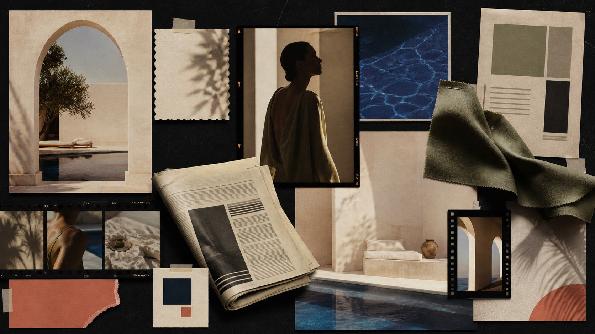

Beyond Ordinary
An anticipation-led hospitality campaign built around the reveal.
First a fragment. Then a glimpse. Then the full sensory world.
01 / The campaign
From anticipation
to experience.
The concept called for a visual world that could not be understood from a single image. The sequence creates curiosity before revealing the atmosphere itself.
Build anticipation through controlled reveals: first a fragment, then a glimpse, then the full sensory world of Aurea.
02 / The direction
The idea enters
the room.
The visual language moves from graphic restraint to warm, open-air immersion. Colour, poolside light, composed portraits, and the rhythm of the edit turn the reveal into the story.
- 01Anticipation
- 02Graphic tease
- 03Controlled reveal
- 04Poolside experience

03 / Production
The idea,
brought to life.
Film, photography, newspaper design, and campaign assets were directed as one coherent visual world. On-set choices held the progression from graphic tease to open-air experience together.
The first gesture
LET'S MAKESOMETHING FELT.